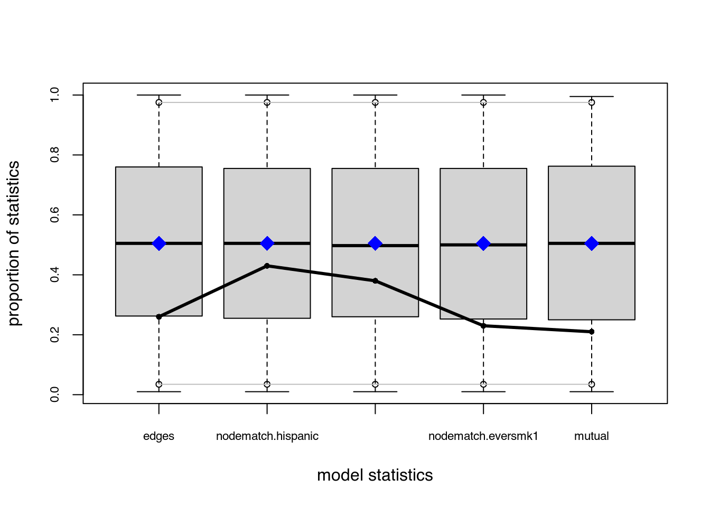
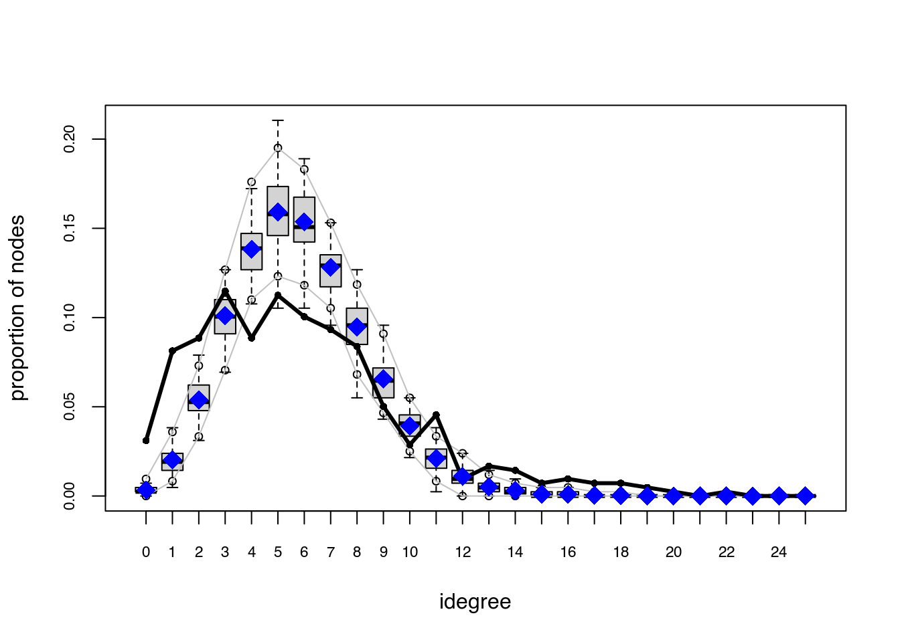
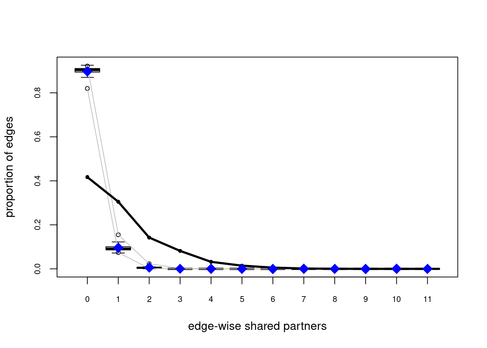
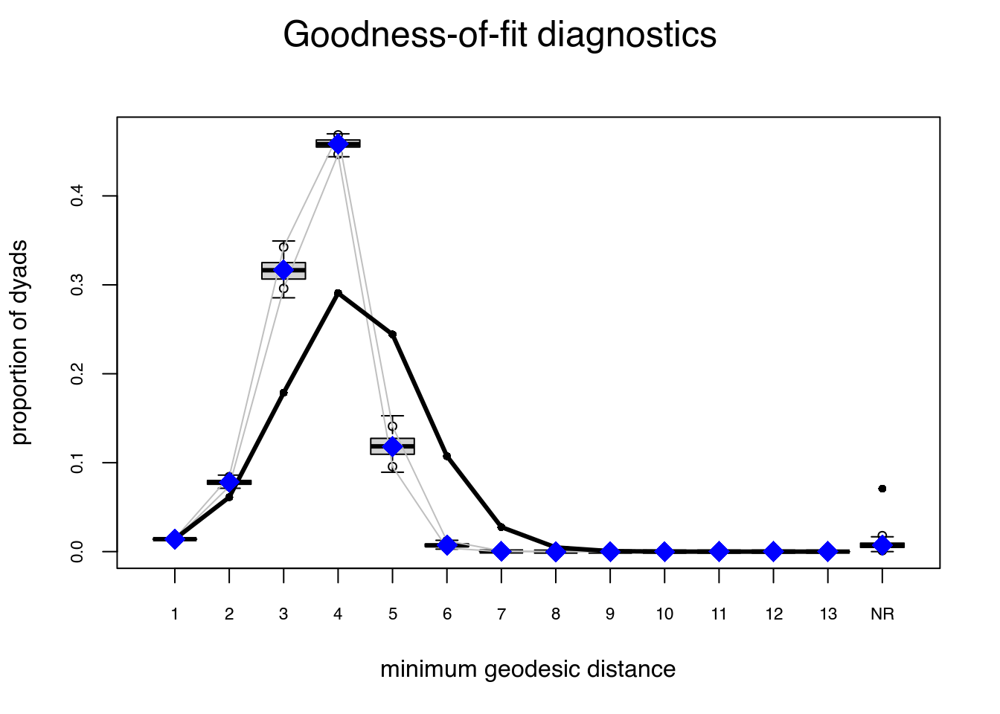
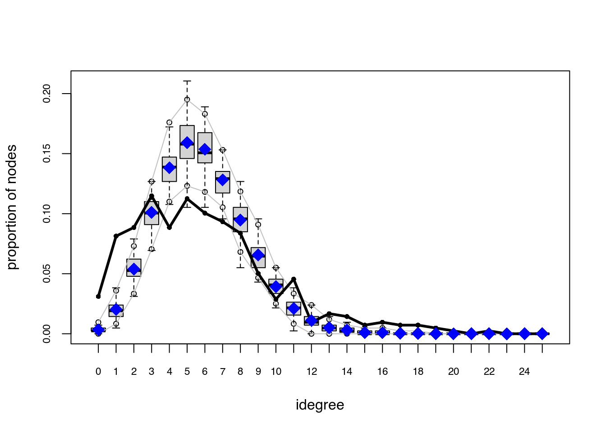
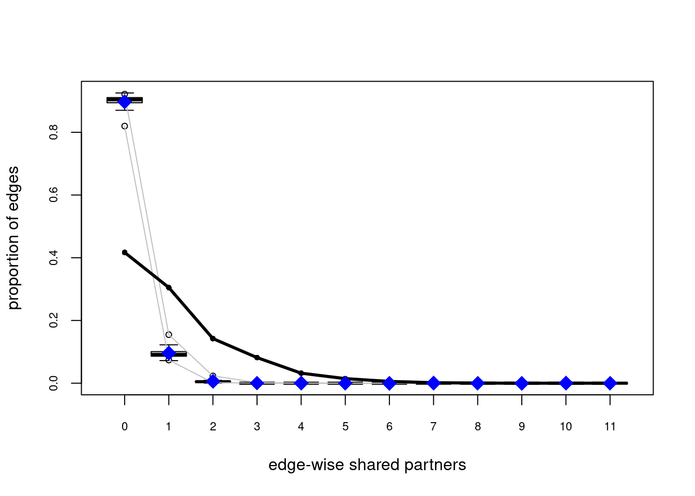
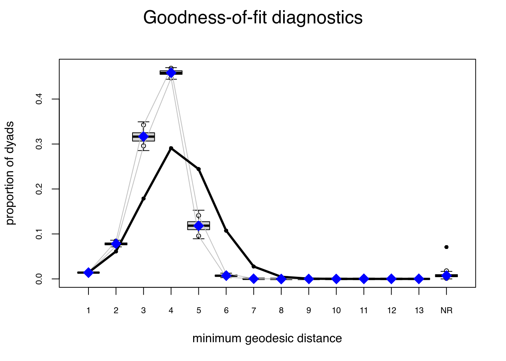

6.5 Model Goodness-of-Fit
In raw terms, once each chain has reach stationary distribution, we can say that there are no problems with autocorrelation and that each sample point is iid. This implies that, since we are running the model with more than 1 chain, we can use all the samples (chains) as a single dataset.
Recent changes in the ergm estimation algorithm mean that these plots can no longer be used to ensure that the mean statistics from the model match the observed network statistics. For that functionality, please use the GOF command: gof(object, GOF=~model).
—?ergm::mcmc.diagnostics
Since ans0 is the one model which did best, let’s take a look at it’s GOF statistics. First, lets see how the MCMC did. For this we can use the mcmc.diagnostics function including in the package. This function is actually a wrapper of a couple of functions from the coda package (Plummer et al. 2006) which is called upon the $sample object which holds the centered statistics from the sampled networks. This last point is important to consider since at first look it can be confusing to look at the $sample object since it neither matches the observed statistics, nor the coefficients.
When calling the function mcmc.diagnostics(ans0, centered = FALSE), you will see a lot of output including a couple of plots showing the trace and posterior distribution of the uncentered statistics (centered = FALSE). In the next code chunks we will reproduce the output from the mcmc.diagnostics function step by step using the coda package. First we need to uncenter the sample object:
# Getting the centered sample
sample_centered <- ans0$sample
# Getting the observed statistics and turning it into a matrix so we can add it
# to the samples
observed <- summary(ans0$formula)
observed <- matrix(
observed,
nrow = nrow(sample_centered[[1]]),
ncol = length(observed),
byrow = TRUE
)
# Now we uncenter the sample
sample_uncentered <- lapply(sample_centered, function(x) {
x + observed
})
# We have to make it an mcmc.list object
sample_uncentered <- coda::mcmc.list(sample_uncentered)Under the hood:
Empirical means and sd, and quantiles:
summary(sample_uncentered) ## ## Iterations = 1769472:10944512 ## Thinning interval = 65536 ## Number of chains = 4 ## Sample size per chain = 141 ## ## 1. Empirical mean and standard deviation for each variable, ## plus standard error of the mean: ## ## Mean SD Naive SE Time-series SE ## edges 2485 60.26 2.5372 3.753 ## nodematch.hispanic 1838 51.25 2.1578 3.662 ## nodematch.female1 1888 52.78 2.2224 3.779 ## nodematch.eversmk1 1759 50.82 2.1400 3.072 ## mutual 493 23.40 0.9855 1.967 ## ## 2. Quantiles for each variable: ## ## 2.5% 25% 50% 75% 97.5% ## edges 2373 2444 2482 2530 2612 ## nodematch.hispanic 1736 1803 1839 1872 1947 ## nodematch.female1 1791 1851 1885 1923 1993 ## nodematch.eversmk1 1662 1725 1758 1794 1858 ## mutual 449 476 493 509 537Cross correlation:
coda::crosscorr(sample_uncentered) ## edges nodematch.hispanic nodematch.female1 ## edges 1.0000000 0.8657369 0.8851587 ## nodematch.hispanic 0.8657369 1.0000000 0.7713632 ## nodematch.female1 0.8851587 0.7713632 1.0000000 ## nodematch.eversmk1 0.8445651 0.7122693 0.7572735 ## mutual 0.7726517 0.6801783 0.7482026 ## nodematch.eversmk1 mutual ## edges 0.8445651 0.7726517 ## nodematch.hispanic 0.7122693 0.6801783 ## nodematch.female1 0.7572735 0.7482026 ## nodematch.eversmk1 1.0000000 0.6873242 ## mutual 0.6873242 1.0000000Autocorrelation: For now, we will only look at autocorrelation for chain one. Autocorrelation should be small (in a general MCMC setting). If autocorrelation is high, then it means that your sample is not idd (no Markov property). A way out to solve this is thinning the sample.
coda::autocorr(sample_uncentered)[[1]] ## , , edges ## ## edges nodematch.hispanic nodematch.female1 nodematch.eversmk1 ## Lag 0 1.000000000 0.861920590 0.90235072 0.86215333 ## Lag 65536 0.415060923 0.326775063 0.43751588 0.38274418 ## Lag 327680 0.063993999 0.002238453 0.09094189 0.05143792 ## Lag 655360 0.002497326 -0.105210070 -0.02414091 0.00143358 ## Lag 3276800 0.026845190 0.068616366 0.03686125 0.03652383 ## mutual ## Lag 0 0.785264416 ## Lag 65536 0.428519050 ## Lag 327680 0.074020671 ## Lag 655360 0.009422505 ## Lag 3276800 0.018126669 ## ## , , nodematch.hispanic ## ## edges nodematch.hispanic nodematch.female1 nodematch.eversmk1 ## Lag 0 0.86192059 1.000000000 0.76137201 0.74623272 ## Lag 65536 0.32680263 0.336764054 0.30353156 0.32690588 ## Lag 327680 0.05778076 0.004465856 0.07267341 0.03757479 ## Lag 655360 0.07704457 0.024226503 0.03252125 0.08420548 ## Lag 3276800 -0.02970399 0.021278122 -0.02753467 -0.03018601 ## mutual ## Lag 0 0.70578514 ## Lag 65536 0.35558587 ## Lag 327680 0.05282736 ## Lag 655360 0.08176601 ## Lag 3276800 -0.07743174 ## ## , , nodematch.female1 ## ## edges nodematch.hispanic nodematch.female1 nodematch.eversmk1 ## Lag 0 0.902350724 0.76137201 1.00000000 0.77769826 ## Lag 65536 0.453418914 0.37756721 0.51290498 0.41954866 ## Lag 327680 0.055464012 -0.01058737 0.09841770 0.04272154 ## Lag 655360 0.009910833 -0.06123858 -0.03186870 0.04679847 ## Lag 3276800 0.004163166 0.04057544 0.01548719 -0.01288236 ## mutual ## Lag 0 0.76981085 ## Lag 65536 0.46327442 ## Lag 327680 0.03629824 ## Lag 655360 0.01987496 ## Lag 3276800 -0.00949882 ## ## , , nodematch.eversmk1 ## ## edges nodematch.hispanic nodematch.female1 nodematch.eversmk1 ## Lag 0 0.86215333 0.746232721 0.77769826 1.000000000 ## Lag 65536 0.37539678 0.297591397 0.41717478 0.448697559 ## Lag 327680 0.02105523 -0.040132752 0.03760486 0.019124328 ## Lag 655360 0.04566425 0.003387581 0.04761067 -0.006388743 ## Lag 3276800 0.05048735 0.084790008 0.07108989 0.045582057 ## mutual ## Lag 0 0.7053009595 ## Lag 65536 0.4020746950 ## Lag 327680 0.0183308894 ## Lag 655360 0.0840948296 ## Lag 3276800 0.0009713556 ## ## , , mutual ## ## edges nodematch.hispanic nodematch.female1 nodematch.eversmk1 ## Lag 0 0.78526442 0.70578514 0.769810849 0.70530096 ## Lag 65536 0.50645801 0.44741607 0.532817503 0.47751208 ## Lag 327680 0.12979152 0.06061696 0.147380566 0.10930214 ## Lag 655360 -0.06393205 -0.13217821 -0.008121728 -0.03814393 ## Lag 3276800 -0.01707605 0.03244214 -0.023750630 0.02781638 ## mutual ## Lag 0 1.000000000 ## Lag 65536 0.580271013 ## Lag 327680 0.091309576 ## Lag 655360 -0.003521212 ## Lag 3276800 -0.025558756Geweke Diagnostic: From the function’s help file:
“If the samples are drawn from the stationary distribution of the chain, the two means are equal and Geweke’s statistic has an asymptotically standard normal distribution. […] The Z-score is calculated under the assumption that the two parts of the chain are asymptotically independent, which requires that the sum of frac1 and frac2 be strictly less than 1.””
—?coda::geweke.diag
Let’s take a look at a single chain:
(not included) Gelman Diagnostic: From the function’s help file:
Gelman and Rubin (1992) propose a general approach to monitoring convergence of MCMC output in which m > 1 parallel chains are run with starting values that are overdispersed relative to the posterior distribution. Convergence is diagnosed when the chains have ‘forgotten’ their initial values, and the output from all chains is indistinguishable. The gelman.diag diagnostic is applied to a single variable from the chain. It is based a comparison of within-chain and between-chain variances, and is similar to a classical analysis of variance. —?coda::gelman.diag
As a difference from the previous diagnostic statistic, this uses all chains simulatenously:
coda::gelman.diag(sample_uncentered) ## Potential scale reduction factors: ## ## Point est. Upper C.I. ## edges 1.03 1.10 ## nodematch.hispanic 1.03 1.10 ## nodematch.female1 1.05 1.14 ## nodematch.eversmk1 1.04 1.12 ## mutual 1.05 1.14 ## ## Multivariate psrf ## ## 1.05As a rule of thumb, values that are in the \([.9,1.1]\) are good.
One nice feature of the mcmc.diagnostics function is the nice trace and posterior distribution plots that it generates. If you have the R package latticeExtra (Sarkar and Andrews 2016), the function will override the default plots used by coda::plot.mcmc and use lattice instead, creating a nicer looking plots. The next code chunk calls the mcmc.diagnostic function, but we suppress the rest of the output (see figure ??).
# [2022-03-13] This line is failing for what it could be an ergm bug
# mcmc.diagnostics(ans0, center = FALSE) # Suppressing all the outputIf we called the function mcmc.diagnostics, this message appears at the end:
MCMC diagnostics shown here are from the last round of simulation, prior to computation of final parameter estimates. Because the final estimates are refinements of those used for this simulation run, these diagnostics may understate model performance. To directly assess the performance of the final model on in-model statistics, please use the GOF command: gof(ergmFitObject, GOF=~model).
—
mcmc.diagnostics(ans0)
Not that bad (although the mutual term could do better)!9 First, observe that in the figure we see four different lines; why is that? Since we were running in parallel using four cores, the algorithm ran four chains of the MCMC algorithm. An eyeball test is to see if all the chains moved at about the same place; in such a case, we can start thinking about model convergence from the MCMC perspective.
Once we are sure to have reach convergence on the MCMC algorithm, we can start thinking about how well does our model predicts the observed network’s proterties. Besides the statistics that define our ERGM, the gof function’s default behavior show GOF for:
- In degree distribution,
- Out degree distribution,
- Edge-wise shared partners, and
- Geodesics
Let’s take a look at it
# Computing and printing GOF estatistics
ans_gof <- gof(ans0)
ans_gof
##
## Goodness-of-fit for in-degree
##
## obs min mean max MC p-value
## idegree0 13 0 1.38 5 0.00
## idegree1 34 2 7.84 15 0.00
## idegree2 37 13 22.13 36 0.00
## idegree3 48 26 40.12 60 0.12
## idegree4 37 44 59.60 74 0.00
## idegree5 47 52 67.86 89 0.00
## idegree6 42 48 65.06 82 0.00
## idegree7 39 38 53.40 69 0.04
## idegree8 35 26 40.30 57 0.46
## idegree9 21 17 26.48 43 0.36
## idegree10 12 9 16.36 24 0.34
## idegree11 19 2 8.73 15 0.00
## idegree12 4 0 4.80 13 1.00
## idegree13 7 0 2.23 6 0.00
## idegree14 6 0 0.99 4 0.00
## idegree15 3 0 0.32 2 0.00
## idegree16 4 0 0.20 2 0.00
## idegree17 3 0 0.09 1 0.00
## idegree18 3 0 0.09 1 0.00
## idegree19 2 0 0.00 0 0.00
## idegree20 1 0 0.02 1 0.04
## idegree22 1 0 0.00 0 0.00
##
## Goodness-of-fit for out-degree
##
## obs min mean max MC p-value
## odegree0 4 0 1.33 6 0.14
## odegree1 28 2 7.67 15 0.00
## odegree2 45 13 22.07 33 0.00
## odegree3 50 27 40.96 55 0.16
## odegree4 54 44 59.37 75 0.50
## odegree5 62 40 67.12 92 0.62
## odegree6 40 46 64.49 81 0.00
## odegree7 28 39 54.33 78 0.00
## odegree8 13 28 39.73 53 0.00
## odegree9 16 17 27.48 45 0.00
## odegree10 20 7 15.74 26 0.22
## odegree11 8 2 9.25 16 0.86
## odegree12 11 1 4.98 12 0.04
## odegree13 13 0 2.12 7 0.00
## odegree14 6 0 0.72 3 0.00
## odegree15 6 0 0.41 3 0.00
## odegree16 7 0 0.17 2 0.00
## odegree17 4 0 0.03 1 0.00
## odegree18 3 0 0.01 1 0.00
## odegree19 0 0 0.02 1 1.00
##
## Goodness-of-fit for edgewise shared partner
##
## obs min mean max MC p-value
## esp0 1032 1991 2195.84 2289 0
## esp1 755 170 235.05 441 0
## esp2 352 1 14.86 86 0
## esp3 202 0 0.84 14 0
## esp4 79 0 0.08 2 0
## esp5 36 0 0.00 0 0
## esp6 14 0 0.00 0 0
## esp7 4 0 0.00 0 0
## esp8 1 0 0.00 0 0
##
## Goodness-of-fit for minimum geodesic distance
##
## obs min mean max MC p-value
## 1 2475 2319 2446.67 2571 0.6
## 2 10672 12048 13548.63 14726 0.0
## 3 31134 48016 54997.05 60096 0.0
## 4 50673 78122 80230.34 82613 0.0
## 5 42563 15553 20682.28 27611 0.0
## 6 18719 383 1227.29 2611 0.0
## 7 4808 0 40.46 214 0.0
## 8 822 0 0.87 16 0.0
## 9 100 0 0.00 0 0.0
## 10 7 0 0.00 0 0.0
## Inf 12333 0 1132.41 3324 0.0
##
## Goodness-of-fit for model statistics
##
## obs min mean max MC p-value
## edges 2475 2319 2446.67 2571 0.60
## nodematch.hispanic 1832 1710 1807.58 1903 0.56
## nodematch.female1 1879 1760 1852.63 1970 0.60
## nodematch.eversmk1 1755 1614 1724.70 1824 0.56
## mutual 486 441 475.38 514 0.66
# Plotting GOF statistics
plot(ans_gof) 

Try the following configuration instead
ans0_bis <- ergm(
network_111 ~
edges +
nodematch("hispanic") +
nodematch("female1") +
mutual +
esp(0:3) +
idegree(0:10)
,
constraints = ~bd(maxout = 19),
control = control.ergm(
seed = 1,
MCMLE.maxit = 15,
parallel = 4,
CD.maxit = 15,
MCMC.samplesize = 2048*4,
MCMC.burnin = 30000,
MCMC.interval = 2048*4
)
)Increase the sample size, so the curves are smoother, longer intervals (thinning), which reduces autocorrelation, and a larger burin. All this together to improve the Gelman test statistic. We also added idegree from 0 to 10, and esp from 0 to 3 to explicitly match those statistics in our model.

Figure 6.1: An example of a terrible ERGM (no convergence at all). Also, a good example of why running multiple chains can be useful